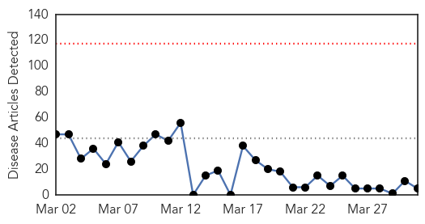
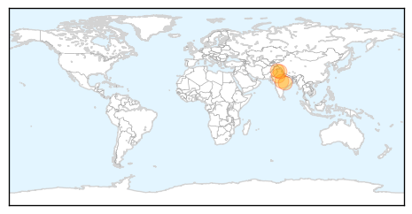
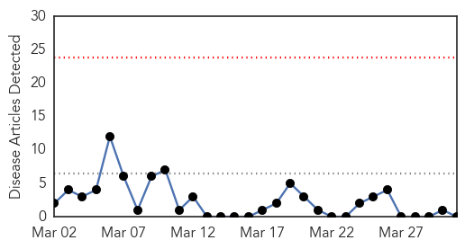
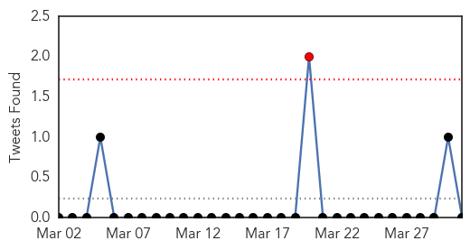

Swine Flu
30-Day Web Trend
0 alerts, 0 warnings

30-Day Twitter Trend
0 alerts, 0 warnings

Article Locations
Article Confidences

Top Articles:
- 1.000
- Swine flu in India: 2,064 succumb to the H1N1 virus
- 0.999
- Swine Flu Claims 20 More Lives, Toll Rises to 2,064
- 0.999
- Swine flu claims 20 more lives, toll rises to 2,064
- 0.980
- Diagnostic Labs for HINI to be made functional shortly: Lal Singh
- 0.865
- 4 more swine flu deaths in Rajasthan, toll touches 419
Top Tweets:
-
No tweets found for Mar 31, 2015
MERS
30-Day Web Trend
0 alerts, 0 warnings

30-Day Twitter Trend
0 alerts, 0 warnings

Article Locations

Article Confidences

Top Articles:
-
No articles found for Mar 31, 2015
Top Tweets:
- 0.555
- AFD Blog `Saudi MOH: 1 MERS Case In Najran' MERS-CoV http://t.co/u91tDsH3ep